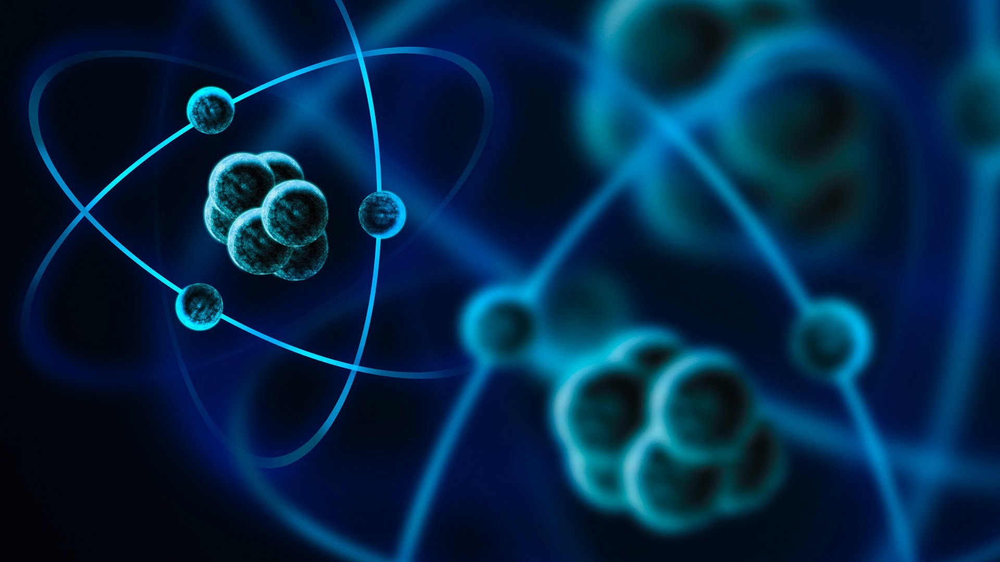

Есенцията на материята: Елементарна физика и отвъд
АБСТРАКТ
Големият взрив… или симулация? Дали Вселената не е просто добре програмирана играМислим, че
Вселената е започнала с взрив. Но какво, ако е била… стартирана? От божество, от суперкомпютър, от
нещо по-странно от самата наука? А когато всичко свърши – ще замръзнем, ще се срутим, или ще бъдем
разкъсани? Открий научните сценарии за края на света, които звучат като смесица от митология,
фантастика и… квантова логика.
Антиматерия: енергия за междузвездни пътувания или оръжие по-страшно от атомната бомба?Има
свой двойник на всяка частица – но с обратен заряд. Когато антиматерията срещне материя, светът не
се изпарява… а избухва в чиста енергия. Това не е научна фантастика – това е физика. Само 1 грам би
могъл да изравни град със земята. Но защо тогава не сме заобиколени от антисветове? Или може би…
някъде вече съществуват?
Неутронът: тихият герой, който крепи ядрата и шпионира Земята,
Няма заряд, не светва в полета, и въпреки това… неутронът е ключов играч в стабилността на
материята. Прониква в материалите без да ги разрушава, разкрива влажността на почвата… от космоса, и
дори е магнитен – без да има заряд. В крайна сметка, когато звездите умират, той е този, който
оцелява. Какво знае неутронът, което ние още не разбираме?
От ускорители до гигантски детектори: Къде физиците трошат материя, за да видят душата
Ѝ
Мислиш, че научните лаборатории са скучни? Представи си машина, по-голяма от цяло село, която
разбива частици със скорости близки до светлината – само за да открие „част от секундата“ нова
частица. Или уред, който тежи колкото боен танк и… слуша. Не музика, а ехото от Големия взрив. И
всичко това – за да отговорим на въпроса: от какво наистина е направена Вселената?
От атома до кварка: защо Вселената е изградена от невидими счупени симетрииДемокрит е
вярвал, че ще стигнем до неделимо зрънце. Съвременната физика каза: „Това зрънце има вътрешен
живот.“ Частици, които имат спин, но не се въртят като топчета, сили, които се обединяват в едно и
също поле, и частица – Хигс бозонът – която „раздава“ маса като магьосник в квантова приказка. Как
реалността всъщност е съставена от постоянни нарушения на симетрията?
Кварки: Цветните „вкусове“, които никога не ще вкусишЗвучи като нов вид сладолед – чарм,
стрейндж, топ… но тези „вкусове“ са съвсем реални и стоят в основата на всичко, което познаваш. Те
не блестят с цвят, но имат… „цветен заряд“. И най-странното? Ако се опиташ да ги отделиш, те се
размножават! Открий парадоксалния свят на частиците, които не можеш да видиш, но без които нямаше да
има нито теб, нито хляба, който ядеш.
Вселената ни се оказва LEGO от невидими частици.
Представете си, че всяка звезда, атом и клетка са изградени от нещо още по-дребно от невидимото –
а това нещо се държи не като топче, а като вълна или вероятност. Стандартният модел описва свят,
в който всяка сила е обмен на частици, а реалността – една гигантска симфония от кварки, лептони и
бозони. Но защо електронът не пада в ядрото? И как нещо, което никога не виждаме, всъщност дава маса
на всичко? На ръба на науката и философията, Стандартният модел е модерната „Периодична система“ на
самото съществуване.
Призрачната частица: как неутриното прелита през теб без дори да подозираш
Всяка секунда милиарди неутрино преминават през тялото ти – без да ги усетиш. Те са невидими, почти
безмасови, и могат да минат през цяла планета, без да се спрат. Учените откриват съществуването им,
когато... нарушен бил законът за запазване на енергията! А днес ги засичаме под ледовете на
Антарктида и дълбоко в морето. Как нещо толкова „несъществуващо“ може да разкрие тайните на
свръхнови и сблъсъци на звезди?
Ракът блести: как антиматерията ни помага да видим болестта в действие
Какво общо имат позитроните, аннигилацията и гама-фотоните с медицината? Повече, отколкото си
мислиш. Позитронно-емисионната томография използва физика от най-фундаментално ниво, за да покаже
как точно работят органите – още преди те самите да разберат, че нещо не е наред. Технологията,
която използва радиоактивна глюкоза и антиматерия, се оказва ключът към диагностика на рак,
Алцхаймер и още много... чрез невидимото.
Нано-войни: как невидимите машини вече променят света
Наночастици по-малки от вирус атакуват тумори, изграждат нови тъкани и правят батериите по-добри от
всякога. От спортни обувки до лекарства с GPS-точност, нанотехнологиите вече са тук – и ни водят към
свят, където материалите се "програмират". А какво е по-странно от това, че аерогелът – най-лекото
нещо на Земята – е почти празен, но по-силен от бетон? Добре дошли в бъдещето, където размерът е
всичко, но мисленето е мащабно.
Циклотрон срещу светлината: как ускорителите станаха фенери към невидимото
Първо ускорявахме частици заради физиката. После разбрахме, че от това се ражда
светлина – но не каква да е, а такава, която разкрива невъзможното: структурата на вирус,
скрито мастило върху древен ръкопис, дори еволюцията на насекомо. Синхротронната светлина е
неочакваният детектив на съвременната наука. А как една частица, която почти достига скоростта на
светлината, може да „освети“ миналото, настоящето и бъдещето?
Космическите лъчи: Как едно „космическо петънце“ обърка Супер Марио
На пръв поглед космическите лъчи изглеждат като нещо далечно и екзотично,
но знаеш ли, че те могат да объркат дори любимата ти видеоигра? Представи си:
играеш Super Mario и внезапно героят ти се телепортира… без никакъв трик. Това не е глюк,
а възможен резултат от частица, дошла от дълбините на Вселената! Как така нещо от космоса може да
промени един бит в паметта на конзолата ти?